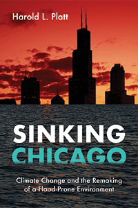

<body bgcolor="#FFFFFF" text="#000000" link="#0000FF" vlink="#CC0000" alink="#CC0000"><center><hr width="350" size="1" align="center" noshade>The first long-term study of the effects of climate change on an American city<hr width="350" size="1" align="center" noshade><p><a href="https://cdcshoppingcart.uchicago.edu/Cart/ChicagoBook.aspx?ISBN=&&PRESS=temple" target="_top">Buy this book!</a> | <a href="https://cdcshoppingcart.uchicago.edu/Cart/Cart.aspx?PRESS=temple" target="_top">View Cart</a> | <a href="https://cdcshoppingcart.uchicago.edu/Cart/Cart.aspx?PRESS=temple" target="_top">Check Out</a></p><p></p></center><!--none//--><h1 class = "booktitle">Sinking Chicago</h1> <h1 class = "subtitle">Climate Change and the Remaking of a Flood-Prone Environment</h1>
<h3>Harold L. Platt </h3>
paper: $32.95, Mar 18<BR>EAN:&nbsp;978-1-4399-1549-3<BR><font color=#990033>Not Yet Published Preorder</FONT><font size=-7><br>&nbsp;</font></p><p class="info">cloth: $99.50, Mar 18<BR>EAN:&nbsp;978-1-4399-1548-6<BR><font color=#990033>Not Yet Published Preorder</FONT><font size=-7><br>&nbsp;</font></p><p class="info">e-book: $32.95, Mar 18<BR>EAN:&nbsp;978-1-4399-1550-9<BR><font color=#990033>Not Yet Published Preorder</FONT><font size=-7><br>&nbsp;</font></p></p></td></tr></table>
<BR> <p class="info">304 pp<BR> 6 x 9<BR> 7 figs., 13 maps <p class="info"><font size=-7>&nbsp;</font></p><p class="info">
</P><BLOCKQUOTE><p><i>"</i>Sinking Chicago <i> is a wonderful book by a master historian. It is essential reading for anyone who wishes to understand the relationship between the problematic history of Chicago's river and lake and the public officials whose dubious and ethically challenged choices throughout the city's history have determined-sometimes for better but often for worse-the conditions in which so many people live. Deeply researched, full of revelatory detail and compelling characters and stories, the book is powerfully argued and clearly written. It reaffirms and deepens Harold Platt's reputation as a preeminent analyst of the fundamental conditions of urban modernity</i>."-<b>Carl Smith</b>, Franklyn Bliss Snyder Professor of English and American Studies and Professor of History Emeritus, Northwestern University, and author of <i>City Water, City Life: Water and the Infrastructure of Ideas in Urbanizing Philadelphia, Boston, and Chicago</i><br>
</BLOCKQUOTE>
<p>In <i>Sinking Chicago, </i>Harold Platt shows how people responded to climate change in one American city over a hundred-and-fifty-year period. During a long dry spell before 1945, city residents lost sight of the connections between land use, flood control, and water quality. Then, a combination of suburban sprawl and a wet period of extreme weather events created damaging runoff surges that sank Chicago and contaminated drinking supplies with raw sewage. Chicagoans had to learn how to remake a city built on a prairie wetland. They organized a grassroots movement to protect the six river watersheds in the semi-sacred forest preserves from being turned into open sewers, like the Chicago River. The politics of outdoor recreation clashed with the politics of water management. Platt charts a growing constituency of citizens who fought a corrupt political machine to reclaim the region's waterways and Lake Michigan as a single eco-system. Environmentalists contested policymakers' heroic, big-technology approaches with small-scale solutions for a flood-prone environment. <i>Sinking Chicago</i> lays out a roadmap to future planning outcomes.<br>
<P CLASS="top"><A HREF="#top">BACK TO TOP</A></P>&nbsp;
<BR>&nbsp;
<h2 class="inpageheading"><A NAME="reviews"></a>Reviews</h2>
<p><i>"Harold Platt's</i> Sinking Chicago <i> traces the city's environmental impact across more than a century of change. It is a monumental analysis that places Chicago in the middle of the vast industrial and postindustrial transformation of American life. This book describes the significance of both water and climate in the life of the capital of America's heartland. The maps and graphs alone make this an important study. Platt's interpretation of Chicago's ecology is a vital contribution to the history of Chicago and the American city."</i>-<b>Dominic A. Pacyga</b>, Professor of History Emeritus, Columbia College Chicago, and author of <i>Chicago: A Biography</i><br>
<P CLASS="top"><A HREF="#top">BACK TO TOP</A></P>&nbsp;<P>
</P><BR>&nbsp;
<H2 class="inpageheading"><A NAME="author bio"></a>About the Author(s)</H2><p><b>Harold L. Platt</b> is Professor of History Emeritus at Loyola University Chicago. He is the author or editor of several books, including <i>The Electric City: Energy and the Growth of the Chicago Area</i>, <i>1880-1930,</i> <i>Shock Cities: The Environmental Transformation and Reform of Manchester and Chicago</i>; and <i>Building the Urban Environment: Visions of the Organic City in the United States, Europe, and Latin America</i> (Temple). He has twice won the book-of-the-year award from the American Public Works Association.<br>
<P CLASS="top"><A HREF="#top">BACK TO TOP</A></P>
<p><h2 class="inpageheading"><a name="subjects"></a>Subject Categories</h2> <p><a href="http://www.temple.edu/tempress/history.html" target="_top">History</a> <br><a href="http://www.temple.edu/tempress/urban.html" target="_top">Urban Studies</a> <br><a href="http://www.temple.edu/tempress/nature.html" target="_top">Nature and the Environment</a> <br><a href="http://www.temple.edu/tempress/political.html" target="_top">Political Science and Public Policy</a> <br><a href="" target="_top"></a> </p>
</p>
<P>
<h2 class="inpageheading">In the Series</h2>�
<p>�<a target="_top" href="http://www.temple.edu/tempress/urban_life.html" OnMouseOver="window.status='Click for other books in this series!';return true;"OnMouseOut="window.status=" ><i>Urban Life, Landscape, and Policy</i></a></P>
<p><p>
The <em>Urban Life, Landscape, and Policy</em> Series, edited by David Stradling, Larry Bennett, and Davarian Baldwin, was founded by the late Zane L. Miller to publish books that examine past and contemporary cities, focusing on cultural and social issues. The editors seek proposals that analyze processes of urban change relevant to the future of cities and their metropolitan regions, and that examine urban and regional planning, environmental issues, and urban policy studies, thus contributing to ongoing debates.
</p></P>
�</P>��
</P>
<p align="center"><a href="https://cdcshoppingcart.uchicago.edu/Cart/ChicagoBook.aspx?ISBN=&&PRESS=temple" target="_top">Buy this book!</a> | <a href="https://cdcshoppingcart.uchicago.edu/Cart/Cart.aspx?PRESS=temple" target="_top">View Cart</a> | <a href="https://cdcshoppingcart.uchicago.edu/Cart/Cart.aspx?PRESS=temple" target="_top">Check Out</a></p><p><font face="Arial" size="1"><a href="copyright.html" onMouseOver="window.status='Web Copyright Policy';return true;" onMouseOut="window.status=''" title="Web Copyright Policy">&copy;</a> 2018 <a href="http://www.temple.edu" target="new" onMouseOver="window.status='Link to Temple University home page';return true;" onMouseOut="window.status=''" title="Link to Temple University home page">Temple University</a>. All Rights Reserved. http://www.temple.edu/tempress/titles/2474_reg.html</font></p>